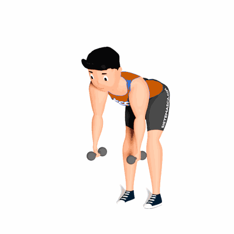

Crucifixo Inverso em Pé

O exercício tem como objetivo de fortalecer e hipertrofiar os deltoides, além de proporcionar um aspecto mais completo e harmônico ao físico também auxilia no equilíbrio muscular, mantendo mais saudável a articulação glenoumeral.
Ficha Técnica
Tipo: Musculação
Grupo Muscular: Ombro
Aparelho: Nenhum
Músculos: Nenhum
Como realizar
- De pé com os halteres em mãos, curvar o tronco à frente até que ele esteja o mais próximo paralelo ao solo;
- A coluna deve permanecer neutra durante o movimento;
- Com a mão em pegada neutra, realizar o movimento de abdução horizontal até os braços estarem na linha dos ombros, segurando no topo para contrair ao máximo o deltoide posterior;
- O punho deve permanecer firme e neutro sem se movimentar durante o exercício;
- Retornar lentamente à posição inicial.
 RC STORE
RC STORE